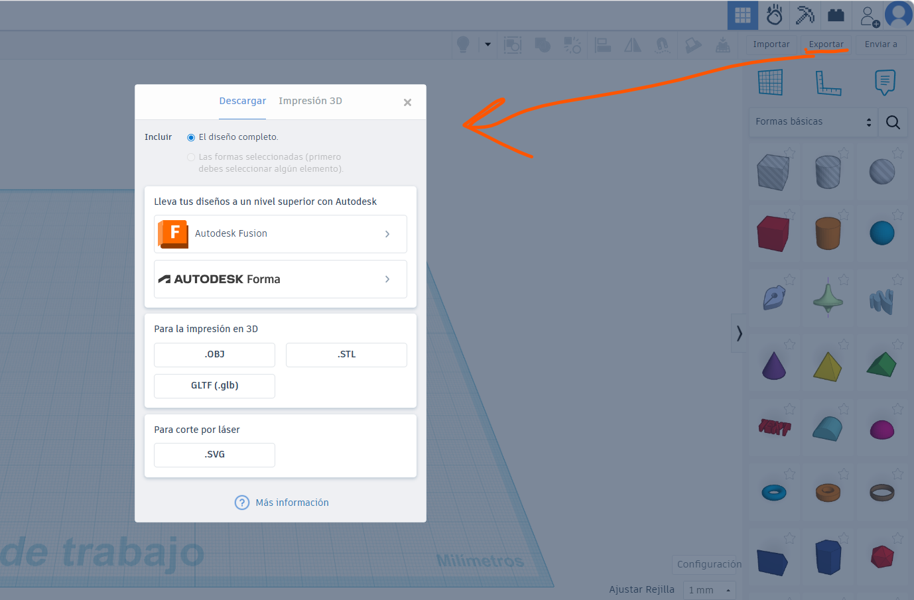

PASOS BÁSICOS CREACIÓN DE MODELO
1. Uso de formas predefinidas
TinkerCAD incluye una biblioteca de figuras básicas como cubos, esferas, cilindros y conos.... La clave está en combinarlas para crear formas más complejas.
2. Herramientas para alinear y agrupar
Cuando trabajas con varios objetos, mantenerlos ordenados es clave. La herramienta de alineación te permite centrar o ajustar figuras de manera precisa. La opción de agrupar no solo une piezas, sino que también puede restar una forma de otra, útil para crear huecos o cavidades.
3. Personalización de objetos y medidas precisas
Además de mover y escalar, la aplicación permite introducir medidas exactas. Esto es esencial para proyectos que requieren precisión milimétrica, como piezas para impresión 3D o prototipos funcionales.
4. Creación de primer modelo básico
Arrastra una forma desde el menú (por ejemplo, un cubo) y colócala en el área de trabajo. Cambia sus dimensiones escribiendo valores exactos o estirando los controladores. Si quieres combinar varias figuras, arrástralas y usa “Agrupar” para fusionarlas. En pocos minutos, tendrás algo que puedes exportar para impresión 3D.
5. Exportar e importar
Tinkercad exporta en formatos compatibles con impresión 3D y otros programas de Autodesk. Para exportar para impresión 3D, el proceso sería el siguiente:
- Seleccionar en el menú superior izquierdo la opción “Exportar”
- Aparecerá un cuadro donde podemos elegir la extensión .STL, apta para ser configurada por un programa laminador
que nos permita la impresión 3D.
